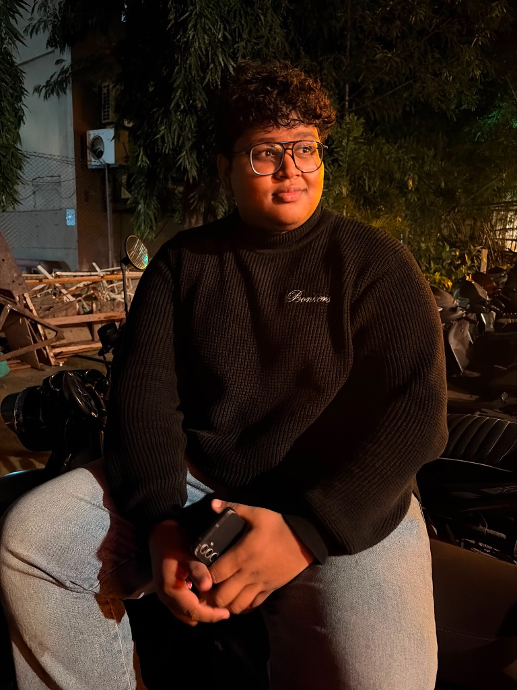

Purity First
We will never compromise on the integrity of our turmeric. Zero additives, zero shortcuts — ever. It's not a policy; it's our identity.
A story of three generations, one golden root, and an unwavering promise of purity.
"The idea was never just about selling turmeric — it was about sharing what my family's land had given us for generations."
Rudra Palande grew up in the lush coastal heartland of Kokan, Ratnagiri — a region celebrated for its rich soil, pure air, and deep-rooted agricultural traditions. His family has been cultivating and producing turmeric on their ancestral land for generations, a practice woven into their daily life and identity. It was watching his mother grind fresh haldi, his grandmother swear by its healing properties, and his father tend the fields with quiet pride, that the seed of an idea was planted in Rudra's mind — to take this pure, potent product beyond the village and into homes across India and the world.
A Cybersecurity student at Symbiosis Skills and Professional University, Rudra brought his entrepreneurial vision to campus where he found an unlikely ally in his classmate and now co-founder, Saumya Shah. Together, the two friends decided to build something real — a brand that married Rudra's family's farming legacy with the rigour of modern science, lab certification, and digital transparency. As Founder & Business Head, Rudra leads the brand vision, marketing strategy, and growth of House of Mangalya — channelling the warmth of his Kokan home into every jar of turmeric the brand delivers.
— Rudra Palande, Founder & Business Head

Saumya Shah is a Cybersecurity student at Symbiosis Skills and Professional University, where his analytical mindset and deep understanding of digital systems laid the foundation for a uniquely modern approach to a traditional business. When he encountered the widespread problem of adulteration in India's spice supply chain — a problem as much about data and trust as it is about agriculture — he knew technology could be part of the answer. That conviction brought him to House of Mangalya as Co-Founder, where he channels his expertise in systems thinking and security into building an operation that customers can genuinely trust.
As Operations Head, Saumya oversees the end-to-end supply chain — from farmer partnerships and harvest scheduling to lab-testing protocols, quality control systems, and last-mile delivery. He built House of Mangalya's digital traceability framework, ensuring that every jar carries a verifiable story from seed to shelf. Beyond logistics, Saumya is the quiet force behind the brand's commitment to transparency — believing that in a world full of noise, the most radical thing a wellness brand can offer is honesty backed by evidence.
We will never compromise on the integrity of our turmeric. Zero additives, zero shortcuts — ever. It's not a policy; it's our identity.
Every product honours the millennia-old role of turmeric in Indian culture — from Vedic rituals to Ayurvedic medicine to the family kitchen.
We publish all our lab reports. Every curcumin reading, every pesticide screen, every heavy metal test — because trust must be earned with evidence.
Fair price, long-term contracts, and mutual respect. Our farmers are partners, not suppliers — and their families' prosperity is part of our mission.
We believe you deserve to know exactly where your turmeric comes from and every step it takes to reach your home.
Certified organic farms in Erode, TN. No synthetic pesticides, chemical fertilisers, or GMO seeds. Ever.
Hand-harvested at peak curcumin concentration — typically 8–9 months after planting, in the cool season.
Traditional sun-drying over 10–15 days. No mechanical force-drying that damages volatile oils and curcuminoids.
Slow-speed granite stone mills. Low-heat grinding preserves aroma, bioactive compounds, and colour intensity.
Third-party ISO 17025 lab testing for curcumin %, heavy metals, pesticides, and microbial safety before each batch ships.
Packed in recyclable glass, sealed for freshness. Delivered to your home within 3–5 business days across India.
Our claims aren't marketing copy. They're backed by independent, internationally recognised certification bodies.
Certified under the National Organic Program (NOP). Certificate #NOP-2024-HOM. Confirms zero synthetic pesticides, herbicides, or fertilisers across our supply chain.
Certified under India's National Programme for Organic Production. Ensures compliance with Indian organic standards from farm to processor.
Batch-by-batch third-party testing by an accredited laboratory. Full reports covering curcumin content, heavy metals, pesticide residues, and microbial load — available on request.